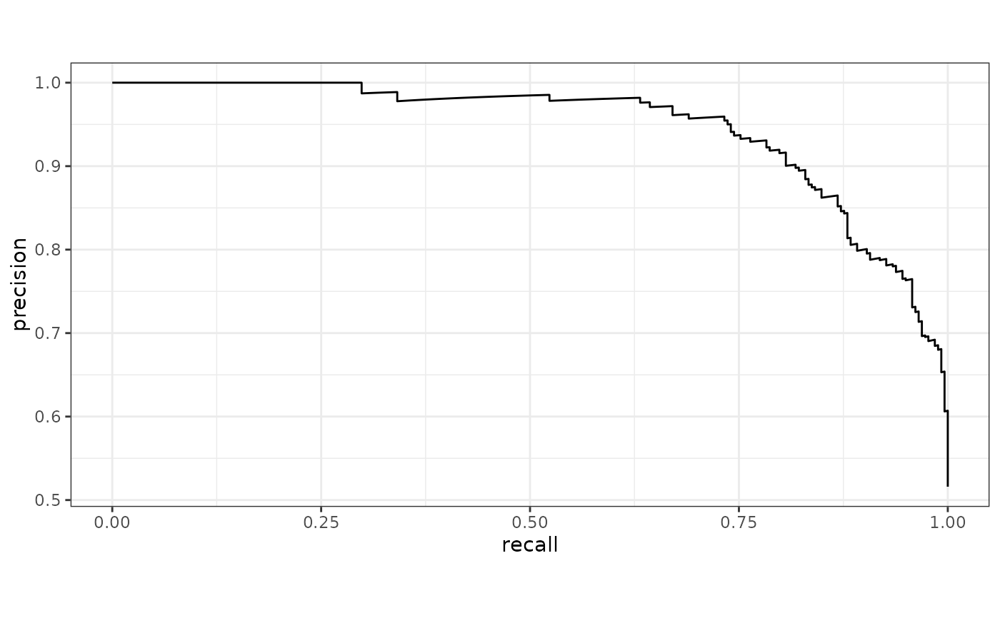
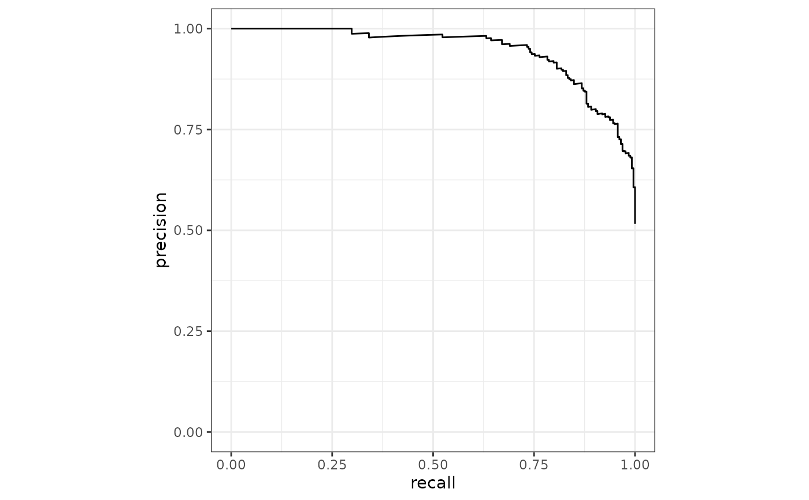
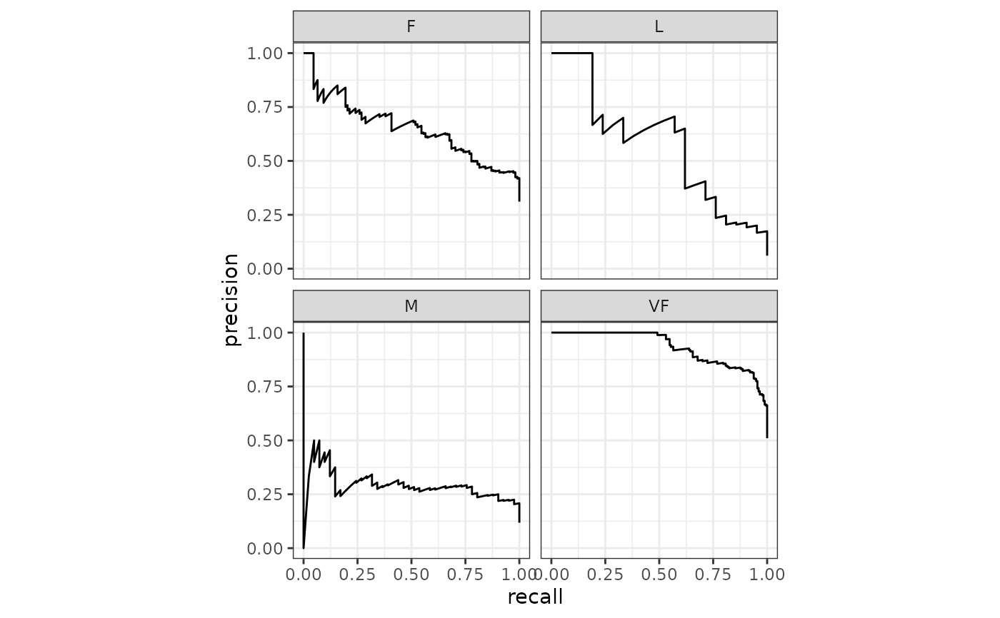
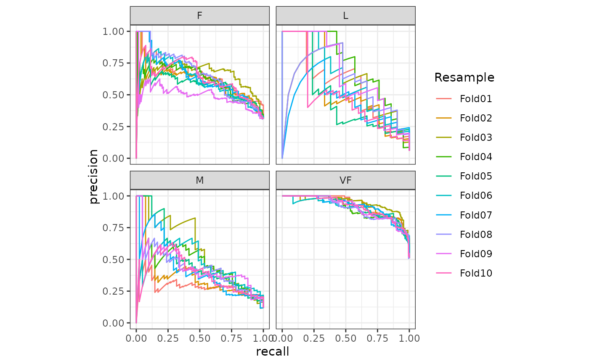

pr_curve() constructs the full precision recall curve and returns a
tibble. See pr_auc() for the area under the precision recall curve.
Usage
pr_curve(data, ...)
# S3 method for data.frame
pr_curve(data, truth, ..., na_rm = TRUE, event_level = yardstick_event_level())Arguments
- data
A
data.framecontaining thetruthandestimatecolumns.- ...
A set of unquoted column names or one or more
dplyrselector functions to choose which variables contain the class probabilities. Iftruthis binary, only 1 column should be selected. Otherwise, there should be as many columns as factor levels oftruth.- truth
The column identifier for the true class results (that is a
factor). This should be an unquoted column name although this argument is passed by expression and supports quasiquotation (you can unquote column names). For_vec()functions, afactorvector.- na_rm
A
logicalvalue indicating whetherNAvalues should be stripped before the computation proceeds.- event_level
A single string. Either
"first"or"second"to specify which level oftruthto consider as the "event". This argument is only applicable whenestimator = "binary". The default uses an internal helper that generally defaults to"first", however, if the deprecated global optionyardstick.event_firstis set, that will be used instead with a warning.
Details
pr_curve() computes the precision at every unique value of the
probability column (in addition to infinity).
There is a ggplot2::autoplot()
method for quickly visualizing the curve. This works for
binary and multiclass output, and also works with grouped data (i.e. from
resamples). See the examples.
Multiclass
If a multiclass truth column is provided, a one-vs-all
approach will be taken to calculate multiple curves, one per level.
In this case, there will be an additional column, .level,
identifying the "one" column in the one-vs-all calculation.
Relevant Level
There is no common convention on which factor level should
automatically be considered the "event" or "positive" result
when computing binary classification metrics. In yardstick, the default
is to use the first level. To alter this, change the argument
event_level to "second" to consider the last level of the factor the
level of interest. For multiclass extensions involving one-vs-all
comparisons (such as macro averaging), this option is ignored and
the "one" level is always the relevant result.
See also
Compute the area under the precision recall curve with pr_auc().
Other curve metrics:
gain_curve(),
lift_curve(),
roc_curve()
Examples
# ---------------------------------------------------------------------------
# Two class example
# `truth` is a 2 level factor. The first level is `"Class1"`, which is the
# "event of interest" by default in yardstick. See the Relevant Level
# section above.
data(two_class_example)
# Binary metrics using class probabilities take a factor `truth` column,
# and a single class probability column containing the probabilities of
# the event of interest. Here, since `"Class1"` is the first level of
# `"truth"`, it is the event of interest and we pass in probabilities for it.
pr_curve(two_class_example, truth, Class1)
#> # A tibble: 501 × 3
#> .threshold recall precision
#> <dbl> <dbl> <dbl>
#> 1 Inf 0 1
#> 2 1.00 0.00388 1
#> 3 1.00 0.00775 1
#> 4 1.00 0.0116 1
#> 5 1.00 0.0155 1
#> 6 1.00 0.0194 1
#> 7 1.00 0.0233 1
#> 8 1.00 0.0271 1
#> 9 1.00 0.0310 1
#> 10 1.00 0.0349 1
#> # … with 491 more rows
# ---------------------------------------------------------------------------
# `autoplot()`
# Visualize the curve using ggplot2 manually
library(ggplot2)
library(dplyr)
pr_curve(two_class_example, truth, Class1) %>%
ggplot(aes(x = recall, y = precision)) +
geom_path() +
coord_equal() +
theme_bw()

# Or use autoplot
autoplot(pr_curve(two_class_example, truth, Class1))

# Multiclass one-vs-all approach
# One curve per level
hpc_cv %>%
filter(Resample == "Fold01") %>%
pr_curve(obs, VF:L) %>%
autoplot()

# Same as above, but will all of the resamples
hpc_cv %>%
group_by(Resample) %>%
pr_curve(obs, VF:L) %>%
autoplot()
